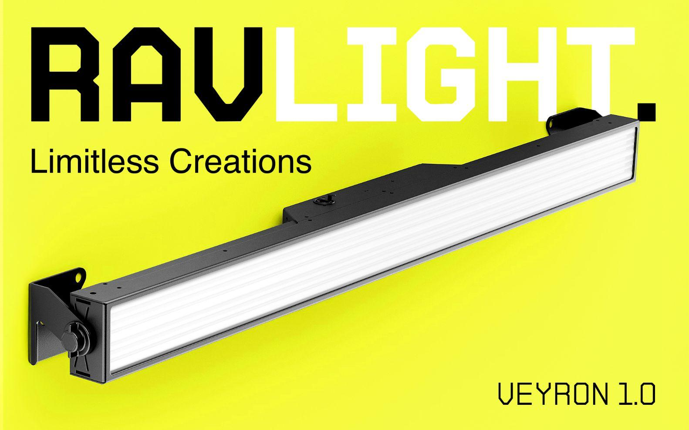
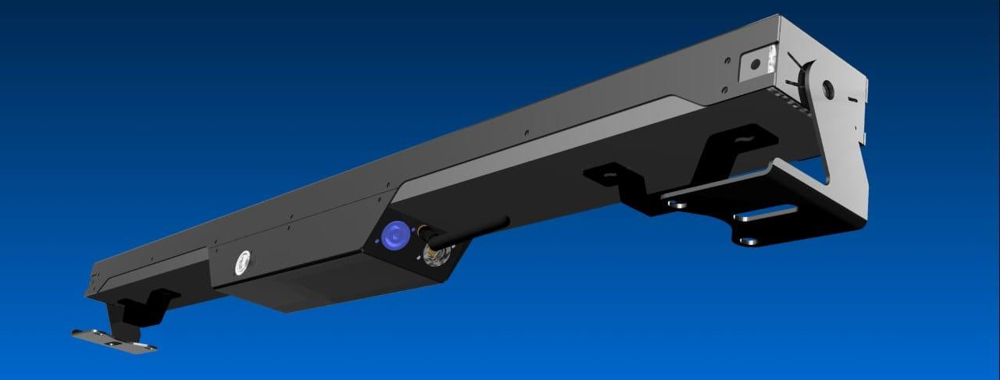

Stable
Veyron 1.0
In-house prototype · Ravision
Veyron is where RavLight started: an ultra-bright LED strobe bar with full-color pixel effects, built to prove the platform on a finished product. Smart network control, sync with other devices, and compatibility with the major lighting-management software — designed to sit on a real show, not a workbench.
